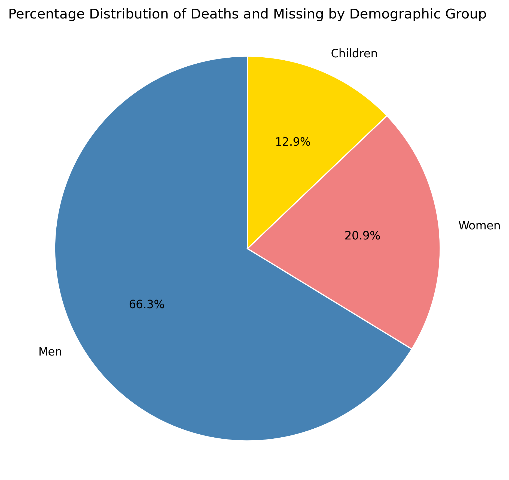
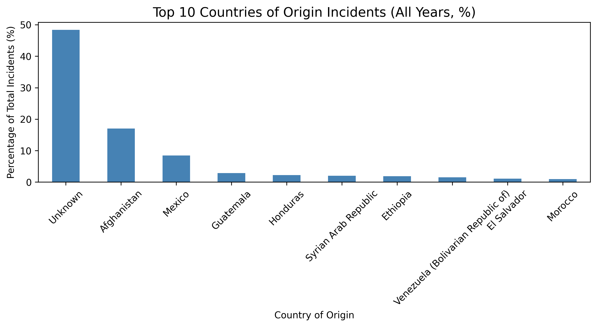
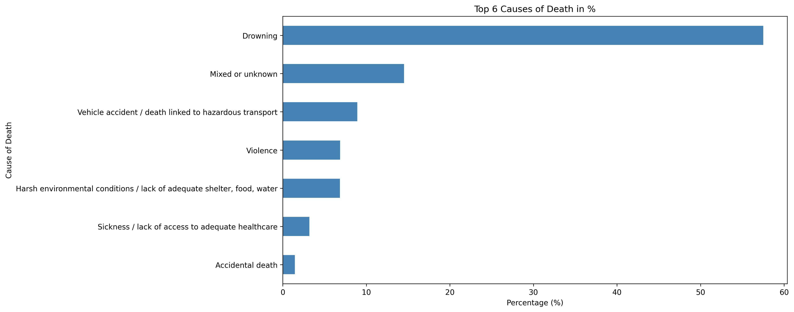
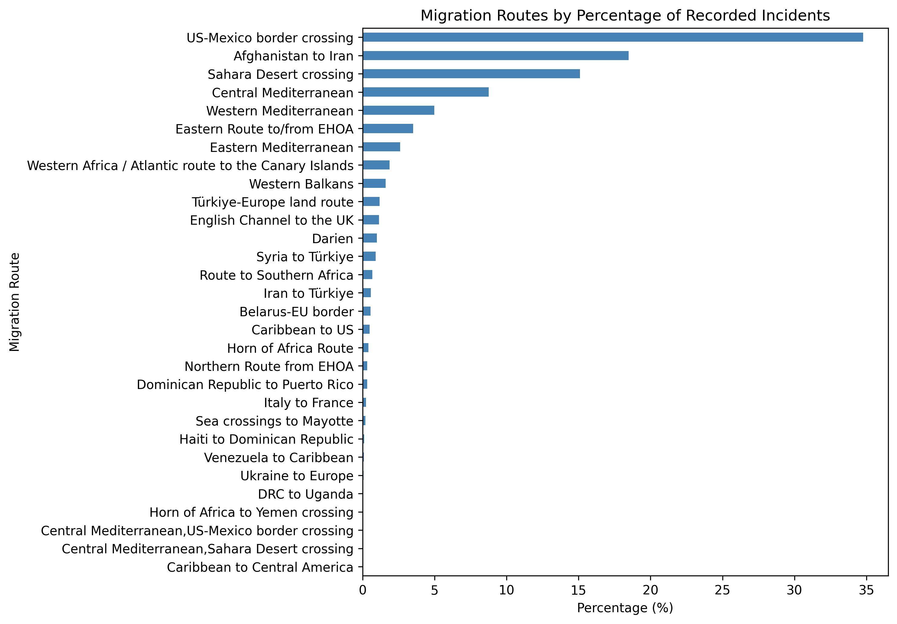
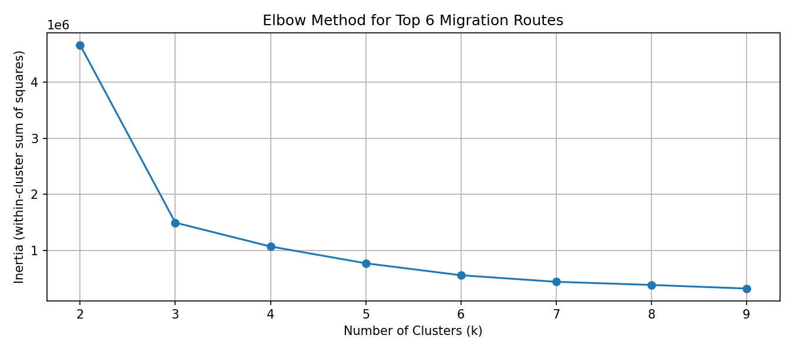

This dashboard visualizes migrant deaths and disappearances across the globe. It highlights major migration corridors and uses spatial analysis to uncover meaningful geographic and temporal patterns. The visualizations aim to support humanitarian understanding through interactive maps and clustering techniques.
Motivation
Every year, thousands of migrants risk their lives crossing international borders. Many do not survive. While these tragedies are often reduced to numbers, this project uses data to identify where and when these deaths and disappearances happen, across multiple major migration routes.
By uncovering spatial and temporal patterns in migrant fatalities across the top 6 most dangerous migration corridors—including the Mediterranean, the US-Mexico border, the Sahara Desert, and others—this analysis aims to support evidence-based action. The goal is not just to visualize loss, but to reveal where preventive measures could save the most lives.
Data Source
The data is provided by the International Organization for Migration (IOM) through the Missing Migrants Project. It documents deaths and disappearances during migration worldwide. The dataset includes time, location, demographics, and cause of death. It spans from 2014 to the present and is continuously updated by NGOs, media, and official sources.
Global Heatmap of Incidents
To provide an initial spatial overview, we created a global heatmap that shows where migrant deaths and disappearances have occurred since 2014. Each data point is weighted by the number of dead and missing persons to emphasize severity.
This visualization helps identify high-risk zones and geographic concentrations of migrant fatalities. It serves as a baseline for more detailed route-specific analyses that follow.
Clear global patterns emerge from this heatmap: high densities are visible in North Africa, the Central and Eastern Mediterranean, the US-Mexico border region, and the Afghanistan-Iran corridor, highlighting where deadly risks are most acute.
Exploratory Visualizations: Demographics, Origins, Causes and Routes
To understand the underlying patterns in migrant deaths, we first explore descriptive statistics and visualizations based on the full dataset. These include demographic breakdowns, top countries of origin, the most common causes of death, and the relative frequency and danger of different migration routes. These insights help lay the foundation for the spatial analyses that follow.
Demographic Profile of the Deceased
Demographic Distribution
The vast majority of recorded deaths involve men (66.3%), followed by women (20.9%) and children (12.9%). This distribution reflects broader global migration patterns, where adult males are more likely to undertake risky routes. However, the substantial proportion of women and children highlights the growing vulnerabilities across all migrant groups, particularly in family-based or forced displacements.

Geographic Origins of Migrants
Top 10 Countries of Origin
The country of origin offers important context for understanding migratory push factors. A significant portion of the data is marked as “Unknown”, underscoring the frequent lack of identification during fatal incidents. Among identifiable cases, countries like Afghanistan (17%) and Mexico (8%) are most represented, followed by a variety of African and Central American nations. These patterns correspond to regions affected by conflict, instability, and poverty.

Causes of Death
Cause of Death (Top 6)
By far the most frequent cause of death is drowning (57.5%), highlighting the extreme risks of maritime crossings, especially in the Mediterranean and Atlantic. A considerable portion of cases are labeled as mixed or unknown causes (14.5%), revealing gaps in incident reporting. Other major contributors include hazardous transport accidents (8.9%), violence (6.8%), and harsh environmental conditions (6.8%) such as dehydration, desert exposure, and extreme temperatures—particularly on land routes through the Sahara.

Migration Routes – Comparing Exposure and Fatality
Routes by Reported Incidents
This bar chart shows the most frequently reported migration routes in terms of number of incidents. The US–Mexico border leads with approximately 35% of all reported incidents, followed by the Afghanistan–Iran corridor and Sahara Desert crossings. However, this chart only reflects event frequency, not severity.

Routes by Deaths and Missing
When shifting the focus to the actual number of deaths and disappearances, a stark contrast becomes evident: the Mediterranean route emerges as the deadliest by far, accounting for over 50% of all recorded deaths globally. Other high-risk corridors include the Sahara Desert (11%), US–Mexico border (10%), Canary Islands route (7.7%), Eastern Africa to Gulf (6.8%), and Afghanistan to Iran (5%).
This divergence between frequency and fatality underscores the importance of looking beyond event counts. While land crossings may be more common, maritime routes often involve capsized vessels and mass casualties in single incidents. For this reason, our subsequent analyses concentrate on six key migration corridors where the impact is most severe.
Selected Routes for Deeper Analysis: Based on the visualizations above, our analysis focuses on six corridors that account for over 92% of global deaths: the Mediterranean (Central, Western, Eastern), Sahara Desert, US–Mexico border, Canary Islands route, Eastern Route to/from EHOA, and the Afghanistan–Iran corridor. These were selected due to their high burden of fatality, geographic diversity, and representativeness of broader global patterns.
Average Incident Locations Over Time
To explore how migration-related fatalities shift in time and space, we calculated weighted average coordinates for each month and year based on the number of deaths and missing per incident. These averages help detect whether the spatial center of fatalities drifts over time due to geopolitical or environmental factors.
Monthly averages show no strong seasonal trend. The centroid remains fairly stable, mostly located in northern Algeria and the surrounding North African corridor. This suggests that the most fatal incidents are not seasonally driven, but instead concentrated in persistent danger zones.
Yearly averages reveal a over time. From 2014 to 2016, the centroid was more eastern (closer to Libya); from 2019 to 2023, it shifted westward, indicating increased risk in areas like the Western Sahara and Western Mediterranean. The shift in 2025 should be interpreted with caution, as data for that year is still incomplete.
KMeans Clustering of Fatal Incidents
To uncover hidden patterns in the spatial distribution of migrant deaths, we used KMeans clustering. This method assigns incidents to the nearest geographic cluster, helping reveal spatial zones with similar risk characteristics.
Choosing the Number of Clusters
Elbow Method
The Elbow plot shows how clustering performance (inertia) improves with more clusters. The "elbow" point indicates diminishing returns beyond a certain number. In our case, k = 3 was chosen, balancing spatial resolution with interpretability.

Cluster Interpretation
The KMeans model grouped incidents into three distinct clusters:
Cluster 0 (Red): US–Mexico Border – Covers deaths in Central America and Mexico, with incidents tightly grouped along known land corridors.
Cluster 1 (Blue): Eastern Africa, Horn of Africa, and Middle East – This group includes deaths in the Afghanistan–Iran corridor, Eastern Route to the Gulf, and parts of the Horn of Africa. It reflects longer, overland journeys with region-specific risks.
Cluster 2 (Green): Mediterranean and Sahara – This large cluster includes desert and maritime deaths, capturing the Central Mediterranean and Sahara Desert zones where the most mass-fatality events occur.
These clusters are not perfect—KMeans assumes spherical shapes and does not detect outliers—but they offer a useful first segmentation of global fatal migration zones.
KMeans Clustering Map
DBSCAN Clustering: Detecting Natural Groupings
While KMeans enforces fixed cluster counts, DBSCAN is a density-based algorithm that automatically detects groupings based on spatial proximity. It's particularly useful for uncovering irregular shapes and separating noise (isolated incidents).
DBSCAN produced more flexible and realistic clusters, especially in dense areas like the Central Mediterranean and Sahara Desert. It identified natural groupings of incidents without forcing them into artificial patterns. This makes it ideal for analyzing real-world migration paths, where clusters often follow coastlines, mountain passes, or deserts.
DBSCAN Clustering Result
Kernel Density Estimation (KDE): Fatality Hotspots in Continuous Space
To capture not just where incidents occur, but also where the most severe outcomes are concentrated, we applied Kernel Density Estimation (KDE). Unlike previous steps focused on totals or clusters, KDE incorporates the exact incident locations and weights each one by the number of deaths and missing persons reported.
This technique visualizes two key aspects at once:
The geographic location of each incident (incident count)
The severity of each incident based on the number of fatalities (severity weighting)
One of the most prominent results is a clear high-intensity hotspot across North Africa, especially in the areas surrounding Libya, Tunisia, and the Central Sahara corridor. Despite global data coverage, most high-weighted values concentrate in this region, confirming its extreme risk level.
Other regions such as the US–Mexico border, Western Africa, or Eastern migration routes contribute far less to the weighted density. This reflects either fewer incidents or a lower average severity per incident in those zones.
Unlike clustering methods that form discrete groups, KDE produces a continuous spatial surface. This makes it easier to detect risk transitions across borders and recognize broader geographic patterns of danger.
By combining where incidents occur and how deadly they are, this map adds an essential dimension to the previous route-based and cluster-based analyses.
Spatial Clustering: LISA (Local Indicators of Spatial Association)
To complement the previous hotspot analysis, we applied LISA to detect whether incidents of migrant deaths are statistically clustered – or simply randomly distributed. This spatial technique reveals where fatalities consistently form local high- or low-concentration patterns compared to neighboring regions.
LISA allowed us to break the analysis down into three focused regions, each showing distinct spatial behaviors:
1. North Africa Cluster
This region shows multiple high-fatality hotspots – especially off the coast of Libya and in parts of the Sahara. These maritime and desert corridors are among the most lethal migration zones globally. Interestingly, nearby subregions also show statistically significant coldspots. This underlines the fact that risk levels can vary sharply over short distances, depending on vessel size, rescue infrastructure, or weather conditions.
2. US–Mexico Border Cluster
Unlike North Africa, this region showed no significant high-fatality clusters. Instead, several coldspots were identified, reflecting consistently low fatality counts in tightly packed areas. This likely stems from a migration pattern dominated by smaller, individual border crossings rather than large-scale events. The strong regulatory presence and localized danger zones result in spatial consistency but low intensity.
3. Eastern Migration Route
This region includes routes from Afghanistan and the Horn of Africa. Spatial patterns here are more dispersed, and only two significant hotspots emerged: one in eastern Iran and one in Ethiopia. The majority of incidents in this corridor formed coldspots – meaning the fatality counts were generally lower or more scattered. This suggests more fragmented migration flows with fewer high-casualty events.
Overall, the LISA analysis helps to distinguish between consistently dangerous zones and regions with more variable or isolated risks. These insights can guide localized interventions more effectively than global averages alone.
Spatial Clustering: LISA (Local Indicators of Spatial Association)
To complement the previous hotspot analysis, we applied LISA to detect whether incidents of migrant deaths are statistically clustered – or simply randomly distributed. This spatial technique reveals where fatalities consistently form local high- or low-concentration patterns compared to neighboring regions.
LISA allowed us to break the analysis down into three focused regions, each showing distinct spatial behaviors:
1. North Africa Cluster
This region shows multiple high-fatality hotspots – especially off the coast of Libya and in parts of the Sahara. These maritime and desert corridors are among the most lethal migration zones globally. Interestingly, nearby subregions also show statistically significant coldspots. This underlines the fact that risk levels can vary sharply over short distances, depending on vessel size, rescue infrastructure, or weather conditions.
2. US–Mexico Border Cluster
Unlike North Africa, this region showed no significant high-fatality clusters. Instead, several coldspots were identified, reflecting consistently low fatality counts in tightly packed areas. This likely stems from a migration pattern dominated by smaller, individual border crossings rather than large-scale events. The strong regulatory presence and localized danger zones result in spatial consistency but low intensity.
3. Eastern Migration Route
This region includes routes from Afghanistan and the Horn of Africa. Spatial patterns here are more dispersed, and only two significant hotspots emerged: one in eastern Iran and one in Ethiopia. The majority of incidents in this corridor formed coldspots – meaning the fatality counts were generally lower or more scattered. This suggests more fragmented migration flows with fewer high-casualty events.
Overall, the LISA analysis helps to distinguish between consistently dangerous zones and regions with more variable or isolated risks. These insights can guide localized interventions more effectively than global averages alone.